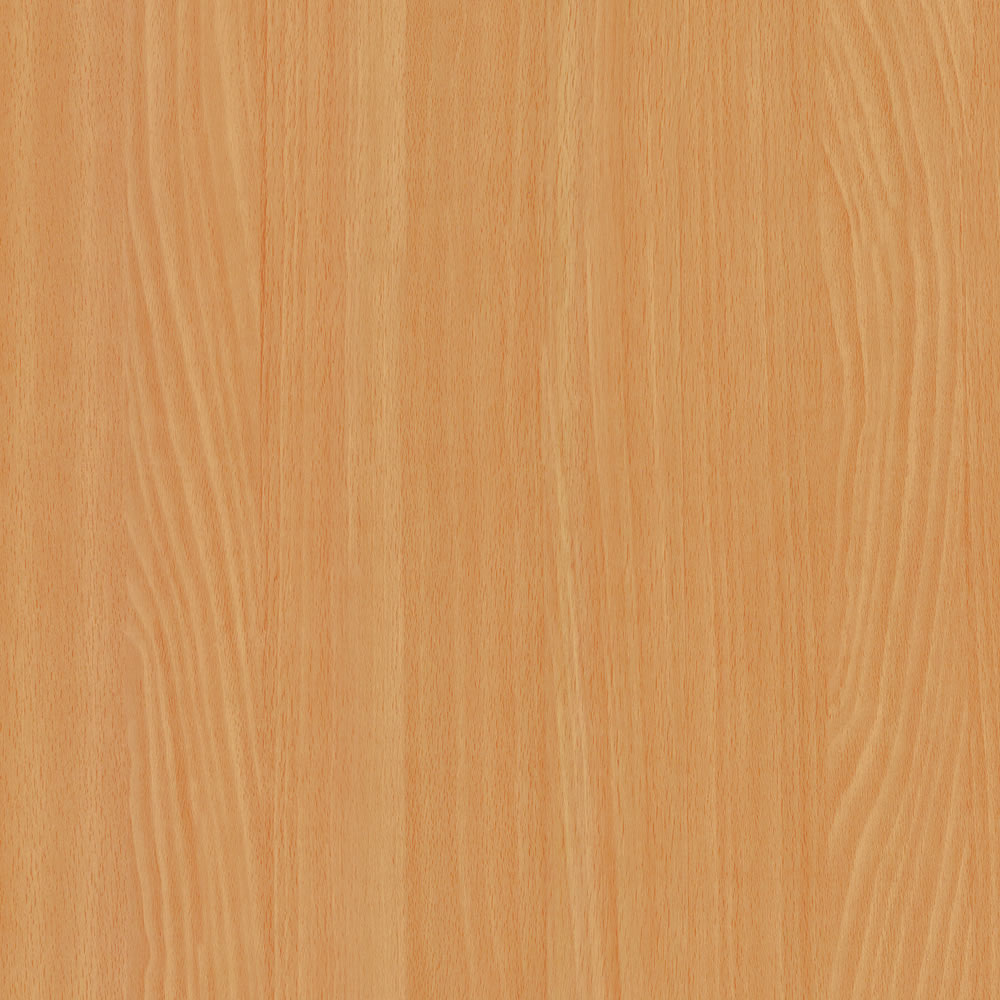

A bükk sokféleképpen hasznosítható kemény lombos faanyag. Magyarországon elsősorban az európai bükk (Fagus sylvatica) anyaga
Közép-európai flóraelem.Hegyvidéki fafaj.Temhőhelyigényes, szélsőségeket nem tűrő, a kései fagyokra érzékeny.Páradús levegőt igényel, mészkedvelő
20-40m magas egyenes, hengres törzsű fa.Kérge háncsrosttól mentes, sima, szürkészöldes színű.Kéregvastagsága 1-2 cm.
Halványsárgás, világosszürkés, rózsaszínes tónusú anyag.A szíjács és a gesz nehezen különíthető el.Az időnként előforduló vörösesbarna álgeszt a fa beteségének tünete.Kis méretű, szórtan elhelyezkedő pórusai szemmel nemigen láthatók, az évgyűrűk kései pásztájában ritkábbak, ezért itt a fa sötétebb színű.Bélsugarai szélesek, 1 mm körüliek, a sugármetszeten tükröket alkotnak, a húrmetszeten vöröses kis orsókként látszanak
| Tulajdonság |
| Rönkhossz |
| Rönkátmérő |
| Sűrűség |
| Zsugorodás sugárirányban |
| Zsugorodás húrirányban |
| Keménység-Rostra merőleges |
| Keménység-Rosttal párhuzamos |
| Merevség |
| Nyomó szilárdság |
| Hajlító szilárdság |
| Nyiló szilárdság |
| Érték |
| 10...20 m |
| 09...1,5 m |
| 0,68 g/cm |
| 5,8 % |
| 11,8 % |
| 34 MPa |
| 72 MPa |
| 14000 MPa |
| 62 MPa |
| 123 MPa |
| 8 MPa |